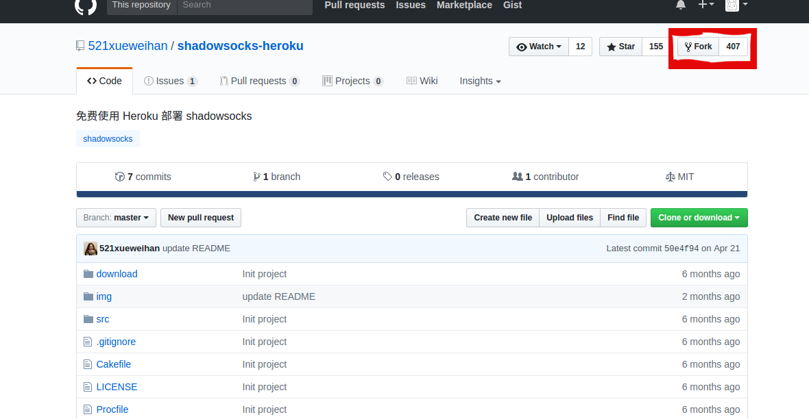
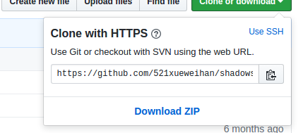
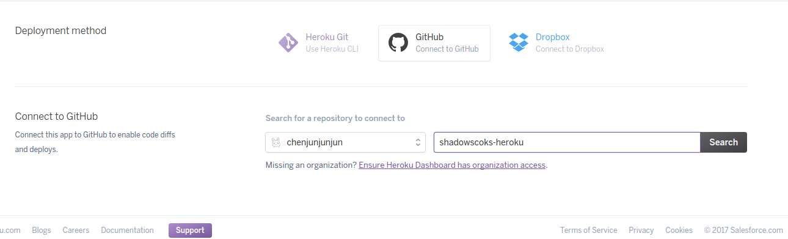
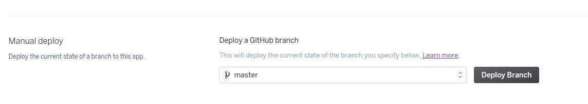
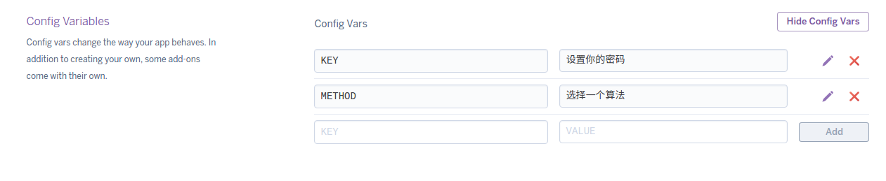
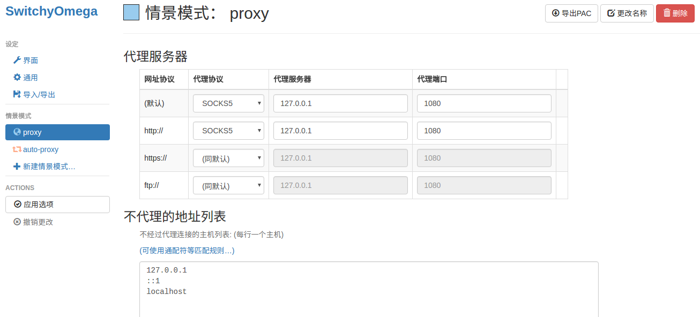
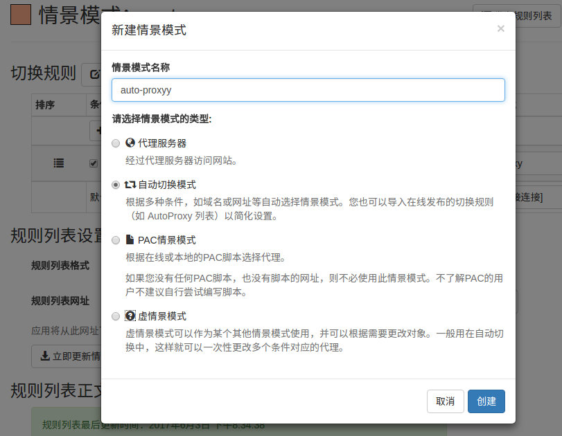
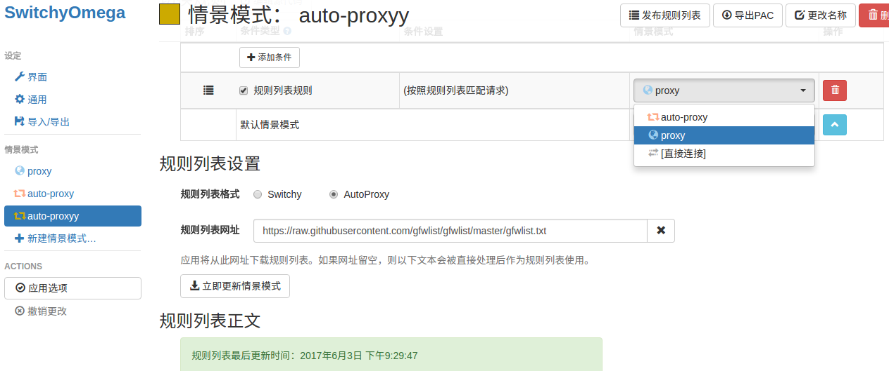
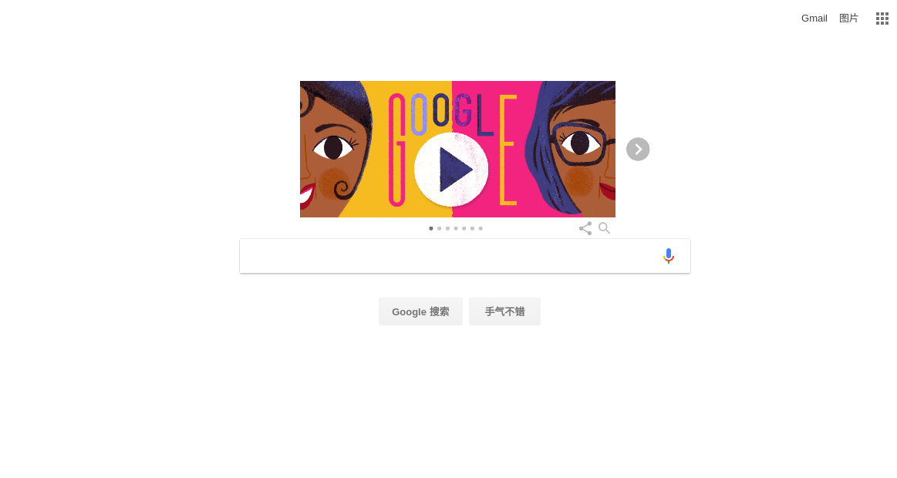

在 github 看到有一个关于在Heroku上搭建 shadowsocks 的项目，看了一下，发现搭建还是很简单的。所以自己尝试着搭建了一下，发现还是很好用的，速度稳定，youtube 完全无压力，基本可以满足日常的上网需求。最重要的是 免费！免费！免费！ ，而且还是无限流量的。所以，在这里安利给大家。
项目Github地址：https://github.com/521xueweihan/shadowsocks-heroku
其实搭建是很简单的，按照文档上面的教程，是完全没问题的。
第一步
首先将项目 Fork 到自己的github下
并将项目下载到本地 
- 然后进行解压，并在项目目录下执行
npm install命令(Windows下在cmd下执行，Linux下在终端执行)，如果没有 npm ，从下面安装。
第二步
现在开始在 Heroku 进行部署
首先注册一个heroku账户 https://signup.heroku.com/
（注册的时候可能会让你进行非机器验证，如果验证出不来，就可能需要使用到VPN）然后，建立一个新的APP (Create new app) 完成之后进入到Deploy页面。在 Deployment method 中选择以 Github 的方式关联。

而后点击 Depoly Branch 完成关联。而后来到 Settings 页面的 Config Variables 设置加密算法和密码  加密算法可以选择 rc4 或 rc4-md5 等。（我选的是rc4-md5）
最后
在Chrome浏览器安装 SwitchyOmega 插件
配置 SwitchyOmega  代理模式据选择 SOCKS5 ，且端口选择为 1080 。
增加自动切换模式  并添加过滤规则,规则列表格式为 AutoProxy ，并在规则列表网址输入网址
https://raw.githubusercontent.com/gfwlist/gfwlist/master/gfwlist.txt上面的连接方式选择为刚刚设置的 proxy ，最后点击 立即更新情景模式 。然后在本地的 shadowsocks-heroku 目录下启动命令行或者终端，输入
node local.js -s 你的app名称.herokuapp.com -l 1080 -m 设置的加密算法 -k 设置的密码 -r 80,如果命令行显示server listening at { address: '127.0.0.1', family: 'IPv4', port: 1080 }则表示启动成功。返回到浏览器，在 SwitchOmega 选择刚刚设置的 auto-proxyy 模式，此时你就可以愉快的翻墙啦！！！ 